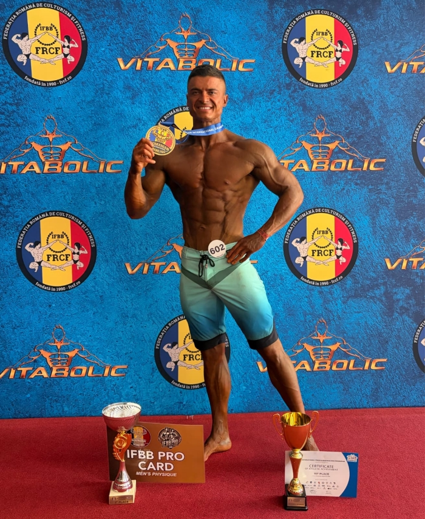
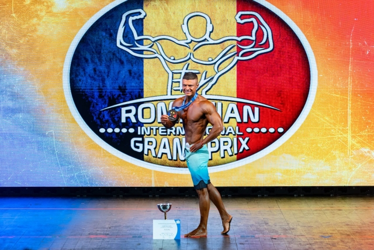
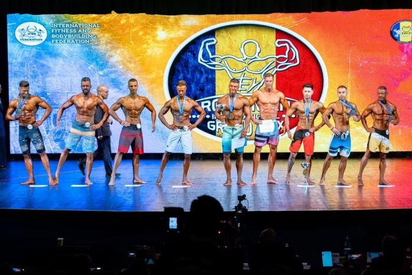

MĂDĂLIN NUICĂ / IFBB PRONU TE OPRILA POTENȚIAL.
Construiește forță. Câștigă încredere.
Fă din progres un mod de viață.
Experiență din competiție.
Atenție pentru fiecare om.

CONFIRMAT PE SCENĂ.
SALUT, SUNT MĂDĂLIN
ȘTIU CE ÎNSEAMNĂ
SĂ O IEI DE LA CAPĂT.
Fiecare etapă are provocările ei. Primul antrenament, o perioadă fără progres sau pasul spre competiție. Ceea ce le leagă este munca pe care alegi să o faci, zi după zi.
Sunt Mădălin Nuică, antrenor personal de fitness și atlet IFBB Pro. Experiența de pe scenă îmi definește disciplina. În sală, punctul de plecare ești tu: nivelul tău, ritmul tău, obiectivul tău.
OBIECTIVUL TĂU.
PUNCTUL NOSTRU DE START.
Nu există un singur drum spre progres.
Alege ce vrei să construiești.
ÎNȚELEGEM DE UNDE PORNEȘTI
Începem cu o conversație despre experiență, obiective și timpul pe care îl ai. Un plan util începe cu contextul tău.
CONVERSAȚIE / OBIECTIVE / CONTEXTALEGEM O DIRECȚIE CLARĂ
Stabilim ce merită prioritizat și discutăm ce formă de colaborare are sens. Disponibilitatea și detaliile se confirmă direct.
PRIORITĂȚI / RITM / CLARITATEPUNEM ACCENT PE EXECUȚIE
O mișcare bine înțeleasă îți dă o bază mai bună pentru progres. Atenția la tehnică și consecvența contează în fiecare etapă.
TEHNICĂ / CONTROL / REPETIȚIECONSTRUIM PE TERMEN LUNG
Ne uităm la direcția în care mergi, discutăm ce funcționează și ce are nevoie de ajustare. Progresul are ritmul lui.
FEEDBACK / ADAPTARE / CONSECVENȚĂ
REZULTATUL SE VEDE.
MUNCA SE REPETĂ.
ÎNAINTE
SĂ ÎNCEPEM.
Ai altă întrebare?
Hai să vorbim.
Pot începe dacă nu am mai fost la sală?
Da, poți lua legătura cu Mădălin indiferent de nivelul de experiență. Prima discuție clarifică de unde pornești și ce abordare ar fi potrivită pentru tine.
Unde au loc antrenamentele?
Locația publică este Calea Stan Vidrighin 14, Timișoara. Confirmă direct punctul de întâlnire și disponibilitatea înainte de a te deplasa.
Cât costă și cum aflu disponibilitatea?
Tarifele, intervalele și forma colaborării se discută direct cu Mădălin, în funcție de obiective și disponibilitate. Sună sau pregătește un mesaj din secțiunea de contact.
În cât timp voi vedea o schimbare?
Ritmul diferă de la o persoană la alta. Nivelul inițial, consecvența, recuperarea și contextul personal influențează progresul. Obiectivele și așteptările se discută individual.
Pot discuta despre o colaborare la distanță?
Trimite detalii despre obiectivul tău și orașul în care te afli. Mădălin îți poate confirma direct opțiunile și disponibilitatea pentru o colaborare la distanță.
URMĂTOAREA
TA VERSIUNE.ÎNCEPE AICI.
Calea Stan Vidrighin 14
Timișoara, România
Antrenamentele și disponibilitatea se confirmă în prealabil, prin telefon sau mesaj.